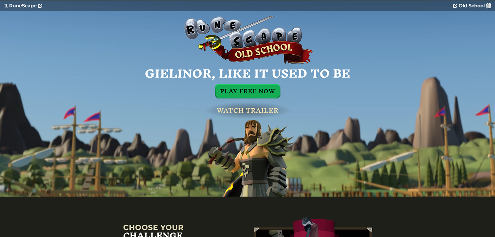
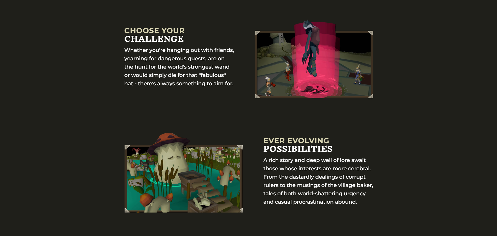
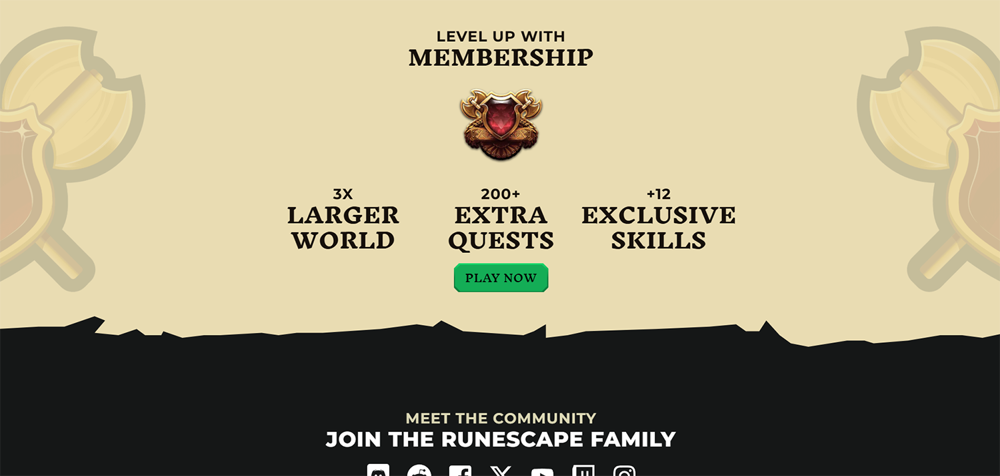

Colors Have Feelings
Colors have feeling and purpose and understanding how to use them together cohesively is crucial in creating an emotionally and aesthetically pleasing design or content. But choosing the right colors for the job isn't as simple as just selecting a few random colors and placing them around without following some principles and structure. Below we will compare a few websites I like that apply color theory in different ways to provide a good viewing experience.
Making Software
I think this webpage does a really good job at using color theory principles to make a webpage thats enjoyable to view. The minimal monochromatic light blue color scheme is very good at enhancing the technology aesthetic and keeping a calm feeling. The use of whitespace in the design helps guide the viewer where to look next. The contrast of the colors with the text and background make it very easy to read and relaxing on the eyes. Imagine this same webpage but in a different color and think about how different of a feeling it would provide.


Oldschool Runescape
This webpage does a really good job as well at using color theory principles to make an enjoyable webpage but in a different way. The colors give the page life and are inviting to the viewer. The contrast is excellent and the accent colors and text on the page really pops and stands out, making you interested in the content being shown in those spots. The use of the whitespace helps sets a visual hierarchy to draw attention to the information you would like the viewer to see the most.
  Conclusion
These webpages are totally different in terms of the information being given, goals of the webpages, and overall feelings and aesthetics that each one gives off; but the ways in which they achieved all of those things were aided by using color theory principles correctly. From the knowledge of what colors mix well with each other, the knowing of what kind of emotions those group of colors provide, and how to place them accordingly, they built eye catching websites that display solid fundamentals of color theory.